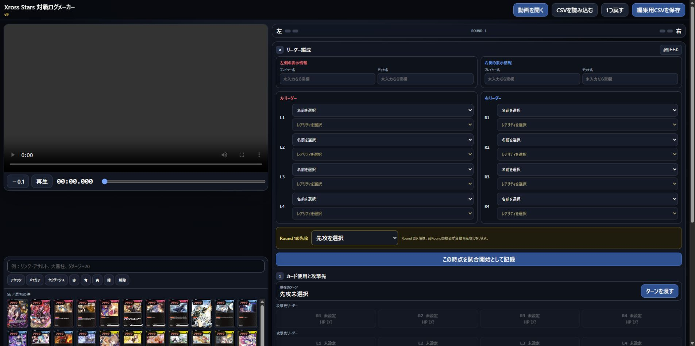
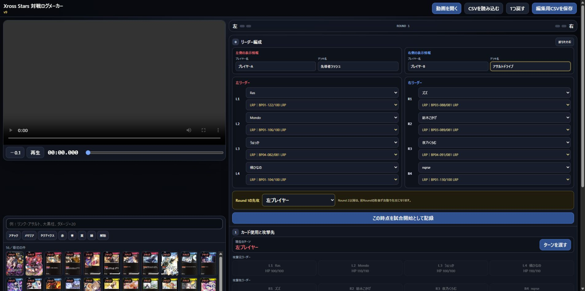
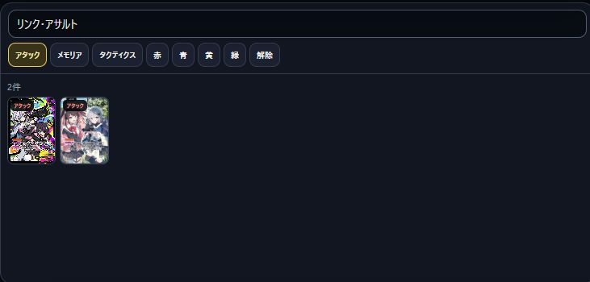
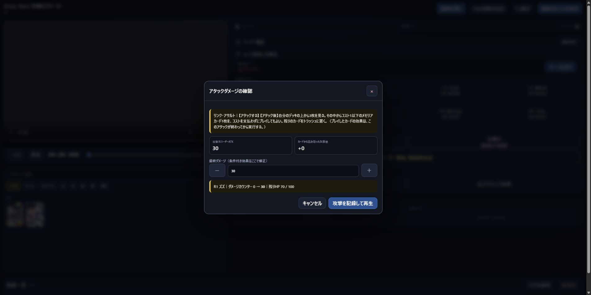
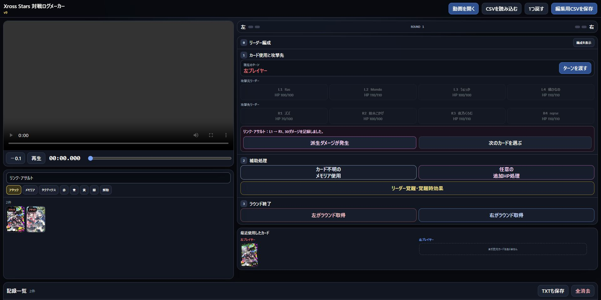
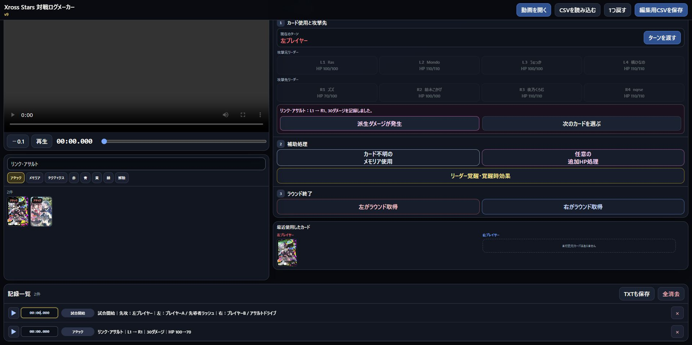

QUICK START GUIDE
対戦動画を見ながら、編集用CSVを作る方法
難しい画像認識は使いません。動画に合わせて「カード」「攻撃元」「攻撃先」などを押していくと、動画編集に必要なログがCSVになります。
動画はアップロードされません選んだ動画は、このブラウザの中だけで再生されます。
作業内容は自動保存同じブラウザなら、途中から再開できます。
最後はCSVを保存完成したCSVを動画ファイルと一緒に編集担当へ渡します。
1
動画を開く
- 右上の「動画を開く」を押します。
- PCに保存されている対戦動画を選びます。
- 左側に動画が表示されたら、再生・停止やシークバーで操作できます。「1.5×」を押すと、通常速度と1.5倍速を切り替えられます。
動画ファイルは外部へ送信されません。ブラウザ上でローカル再生するだけです。推奨形式はMP4／H.264（8-bit・yuv420p）／AACです。非対応コーデックを選ぶと、黒画面になる前に理由とFFmpeg変換方法が表示されます。

2
プレイヤー・リーダー・先攻を設定する
- プレイヤー名とデッキ名を入力します。不要なら空欄でも構いません。
- 左右4枚ずつ、場に出ているリーダー名を選びます。
- 実物と同じレアリティを選びます。候補が1つなら自動選択されます。
- Round 1の先攻を左右から選びます。
- 動画を試合開始の瞬間に合わせ、「この時点を試合開始として記録」を押します。
プレイヤー名・デッキ名は、試合開始を記録した後でも「編成を表示」から修正できます。

3
使われたカードを検索して押す
動画内でカードが使用された時点に合わせ、画面下の検索欄からカードを選びます。カード名の一部だけでも検索できます。
- 「アタック」「メモリア」「タクティクス」と色は組み合わせて絞り込めます。
- 一度使ったカードは「最近使用したカード」に残り、次からすぐ押せます。
- メモリアは画像を押して使用します。プレイ時ダメージがあるカードは動画が止まるので、対象や配分を選んで確定してください。
- アタックは、画像を押したあとに攻撃元リーダー → 攻撃先リーダーの順で押します。

4
アタックの最終ダメージを確認する
攻撃元と攻撃先を選ぶと確認画面が出ます。リーダーATKとカード効果を参考に、実際に与えた最終ダメージへ合わせます。
- 「−」「＋」または数字欄で10刻みに修正します。
- 対象リーダーの残りHPを確認します。
- 問題なければ「攻撃を記録して再生」を押します。
条件付きのダメージ増減は自動判定しないため、動画の処理結果に合わせて最終ダメージを直してください。

5
必要なときだけ特殊処理を使う
| 場面 | 押すもの | 入力する順番 |
|---|---|---|
| 派生ダメージ／回復 | 「派生ダメージが発生」または「任意の追加HP処理」 | 対象 → ダメージ／回復 → 数値 |
| 覚醒 | 「リーダー覚醒・覚醒時効果」 | 覚醒リーダー → 必要なら効果対象と数値 |
| タクティクス | 検索結果のタクティクスカード | カード → 装備先リーダー |
| ターン移行 | 「ターンを渡す」 | 動画でターンが切り替わった瞬間に押す |
| Round終了 | 「左／右がラウンド取得」 | 勝った側を押す。次Roundは敗者が自動で先攻 |
アタック後に追加処理がなければ「次のカードを選ぶ」を押します。Roundが変わるとHPとダウン状態はリセットされ、覚醒状態は維持されます。

6
記録一覧を確認してCSVを保存する
- 記録一覧で時刻と内容を確認します。
- 時刻は直接書き換えられます。内容を直す場合は右端の鉛筆ボタンを押します。
- 編集画面には、その処理の直前における8人のHPが表示されます。攻撃先やダメージ量などを直して「修正して再計算」を押すと、それ以後のHP・回復・ダウン判定も自動で再計算されます。
- 不要な行は「×」で削除できます。間違えた直後なら、画面上部の「1つ戻す」でも取り消せます。
- 作業を終えたら「編集用CSVを保存」を押します。
3:00の処理を5:00まで進めてから直しても、3:00直前のHPを基準に5:00まで再計算されます。CSVを手修正した場合は「CSVを読み込む」から再開できます。

⌨
覚えておくと便利なキー
| Space | 動画の再生／停止 |
|---|---|
| ← → | 0.1秒ずつ移動 |
| Shift ＋ ← → | 1秒ずつ移動 |
| Ctrl ＋ Z | 直前の記録を1つ戻す |
最低限これだけ覚えればOK
動画を開く → リーダーと先攻を設定 → 試合開始を記録 → カードを押す → 必要な対象を押す → Round終了 → CSVを保存、の順です。